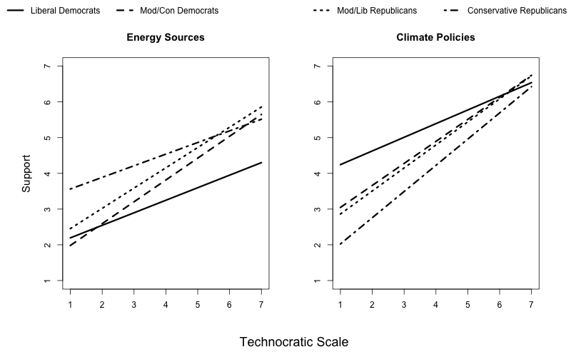

Political Beliefs, Views about Technocracy, and Energy and Climate Policy Preferences
Abstract
The use of technocratic decision-making, where policy decisions are made by elite experts, is an important aspect of policymaking in the United States. However, little work has examined public opinion about technocracy. Using data from a representative sample of the United States (n = 1200), I explore differences in support for technocracy and the implications of that support for views about politically controversial energy sources and climate policies. Overall, I find that liberal Democrats, moderate/conservative Democrats, and moderate/liberal Republicans were more likely than conservative Republicans and moderate independents to support technocratic decision-making. In addition, I find that as support for technocracy increases, so does support for energy sources and climate policies; however, there are significant interaction effects across political beliefs.
Figure

BibTex citation
@article{nowlinPoliticalBeliefsViews2021,
title = {Political {{Beliefs}}, {{Views About Technocracy}}, and {{Energy}} and {{Climate Policy Preferences}}},
author = {Nowlin, Matthew C.},
year = {2021},
journal = {Public Understanding of Science},
volume = {30},
number = {3},
pages = {331--348},
publisher = {{SAGE Publications Ltd}},
issn = {0963-6625},
doi = {10.1177/0963662520978567}
}